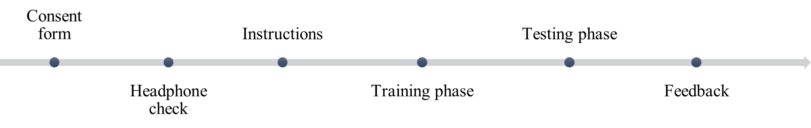
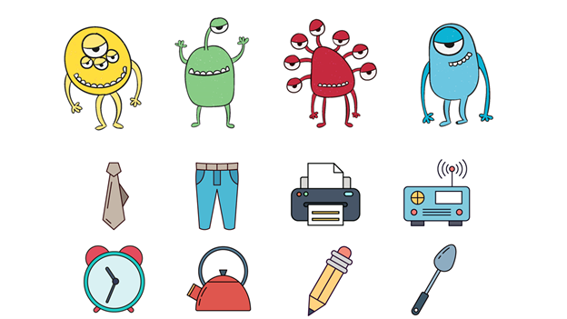
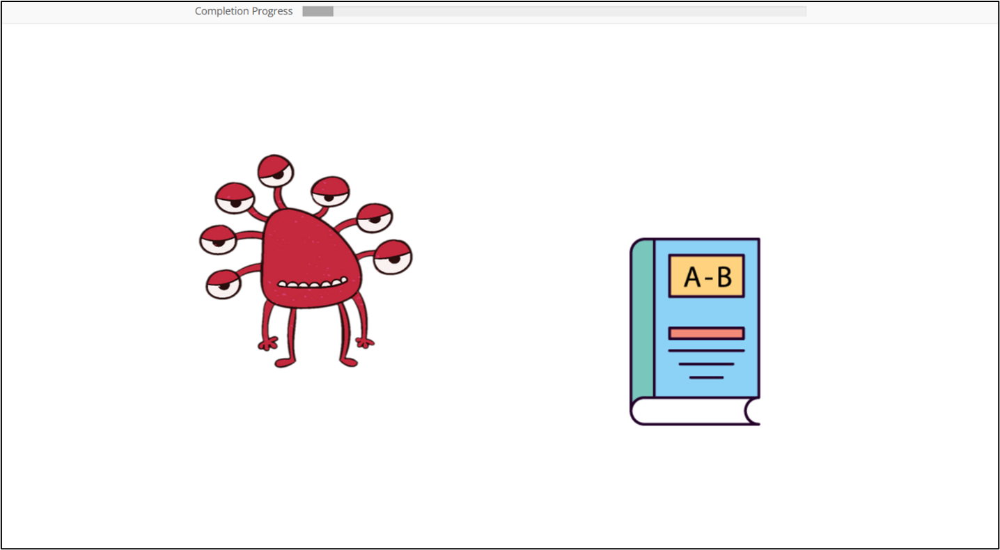

3 Methods
3.1 Participants
A total of 241 participants were recruited from the UBC linguistics participants pool in the Alternating 1st, Non-alternating 1st, and Mixed experimental conditions with 82, 83, and 76 participants, respectively. This convenience sample consisted of participants aged 16 to 49 (Mean=20.6, SD = 4), with 167 as female (69%), 49 participants as male (21%) and 25 (10%) as nonbinary or unreported. Regarding the language background, 211 reported English as their dominant language, and 30 individuals listed English as their non-dominant language. Among the non-English dominant languages, Mandarin and/or Cantonese (13), Korean (5), Japanese (4), and Tagalog (3) were listed. Due to not meeting the language background eligibility criterion of the study, 5 French-speaking participants were excluded, specifically as they were raised with Francophone caretakers with an age of acquisition of French below four. More information about the data collection procedures and the inclusion and exclusion criteria is provided in Section 3.5.
3.2 Overview of design
The experimental design employed a between-subjects approach, consisting of three distinct conditions. The conditions varied only in the distribution order and the content of the training blocks, but all participants completed the training phase with the same set of items and the same number of training trials by the time they reached the testing phase. Consequently, this independent variable was categorical, consisting of three levels (i.e., the training conditions). The dependent variable was binary, representing participants’ correct responses in two forced-choice tasks during testing. Below is a diagram that provides a step-by-step overview of the experimental design in Figure 3-1.

The experiment was conducted remotely (online) via a web browser. Participants had to blindly register in only one the conditions to receive a link. After the landing page, participants were required to complete a consent form and undergo a headphone check with six trials. Correct answers to four and more trials allowed them to progress to the experiment. Introductory instructions about the artificial language were provided to participants at the outset of the experiment and more specific instructions before the training and testing tasks.
The training phase included 144 trials, and the testing phase included 64 trials overall. At the end of the experiment, an optional debriefing form was made available, allowing participants to offer written feedback regarding their approach to the experiment. Further details about the procedure in each phase and the types of trials will be discussed in Section 3.4 after reviewing the materials used in the experiment in Section 3.3.
3.3 Materials
All the nonce-word stimuli used throughout the training phase of the experiment consisted of two-word phrases (word1 + word2) presented to participants as audio stimuli and simultaneously accompanied by visual stimuli. In the introduction to the mini-language that participants received, these phrases were framed as possessive phrases in an alien language, where the first word is the possessor and the second word is the possessed item (mirroring the most common order in English). These items were described as various everyday items that the aliens brought in their luggage to Earth to disguise themselves on their tour of the galaxy. The contextual scenario was introduced to participants as an opportunity to learn about possessive phrases in that alien language.
3.3.1 Training and testing Stimuli
In total, there were four word1 stimuli, representing the aliens‚Äô names, categorized into alternating and non-alternating types. Each alternating word1 had two allomorph forms. The phonological conditioning pattern of the alternating word1s was analogous to that of the liaison allomorphs in French. The C-final allomorph ([me ʃ] or [dit]) would occur before V-initial word2s and the V-final allomorph ([me] or [di]) would occur before C-initial word2s. The consonants in bold letters / ʃ/ and /t/ are referred to as the liaison consonant (LC). Table 3-1 below displays all the word1s designed to be analogous to the morpheme-specific alternations in French, as presented in Section 2.2 in Examples (1‚àí5).
| Alternating word1s | Non-alternating word1s | ||
|---|---|---|---|
| V(C)-final | C-final | V-final | |
| [me], [me ʃ] | [di], [dit] | [kɑn] | [lu] |
| (as in petit) | (as in jeune) | (as in joli) |
The rest of the stimuli were 32 word2s which were constructed using 18 consonants (/p b t d k g t ʃ d ʒ f v s z ʃ n m r l j/) and six vowels (/i e u o √¶ ɑ/) organized into four distinct word shapes: V.CVC, V.CV, CV.CVC, and CV.CV. The segments adhered to the phonemic inventory and phonotactic rules of English so the vowels /e/ and /o/ were phonetically [e…™] and [o ä], except before /r/. Each vowel appeared between 4 and 6 times, while each consonant was included between 2 and 4 times in the overall list of word2s. Efforts were made to counterbalance the position of vowels and consonants in the words as much as possible. Table 3-2 below categorizes the word2s into V-initial and C-initial types. Sixteen of the word2 stimuli appeared both in training and in testing tasks 1 and 2, while the other 16 were only used in task 3 in testing (i.e., they did not appear in training).
| V-initial word2s | C-initial word2s | |||
|---|---|---|---|---|
| V.CVC | V.CV | CV.CVC | CV.CV | |
| Training & Testing task 1 and task 2 | /edæp/ | /æte/ | /pæzɑm/ | /vezu/ |
| /ibud/ | /ogi/ | /budol/ | /mæti/ | |
| /ɑt√¶l/ | /ufe/ | /gɑbi ʃ/ | /kisɑ/ | |
| /ug√¶ ʃ/ | /ido/ | /d ʒomet/ | /peku/ | |
| Testing task 3 (novel) |
/it É√¶n/ | /ezɑ/ | /f√¶rus/ | /fule/ |
| /ɑjor/ | /ɑvi/ | /t É√¶gef/ | /s√¶d í…ë/ | |
| /okɑn/ | /osu/ | /runip/ | /rejɑ/ | |
| /e ʃin/ | /imɑ/ | /zo ʃek/ | /voli/ |
The word1 and training word2 stimuli paired together would result in two-word phrases that constitute the items in the training trials, as well as the choice stimuli in testing task 1 and the prompt stimuli in the testing task 2 trials. The word1 and novel word2 stimuli paired together would result in two-word phrases that are used only as the prompt stimuli in the testing task 3. Further details about the distribution of the stimuli in the training and testing phase are provided in Section 3.4 along with the experimental procedure.
3.3.2 Audio stimuli
The audio stimuli were recorded by a phonetically-trained female speaker of Canadian English in a controlled recording environment, using a Shure WH20 dynamic headset microphone and PreSonus Studio One Pro software with a sampling rate of 44.1 kHz and a bit depth of 32-bit. All audio files were adjusted and normalized to an amplitude of 50 dB. The phrasal stimuli comprised a list of trisyllabic word1 + word2 phrases structured in six various shapes: CV.CV.CV(C) or CVC.CV.CV(C) or CV.VCV(C). The first vowel was pronounced with an unreduced quality to make sure all the stimuli adhere to the perceived stress pattern ˌσ.ˈσ.σ. The phrasal trisyllabic stimuli were recorded without a carrier phrase, in a list, but the single isolated words, used in testing tasks 2 and 3, were placed within the carrier phrase “I said [target word] again/twice”. The long recordings were transcribed by the researcher and subsequently annotated using the Montreal Forced Aligner 2 package in Python (McAuliffe et al., 2017). Following a thorough review of the annotation text grids produced by the MFA, smaller audio files containing only the target words (ranging from 1 to 3 seconds) were automatically extracted using a script in Praat 6.1.42 (Boersma and Weenink, 2021).
3.3.3 Visual stimuli
Each word in the experiment was associated with a distinct and colourful image consistently for all participants. The visual stimuli included 2D vector illustrations of various alien characters and everyday objects, covering themes related to school, the workplace, kitchen items, and more. These illustrations were sourced freely from a vector image and graphics website found on the internet.1 The images were displayed centrally on the screen, with dimensions between a maximum of 580 pixels and a minimum of 256 pixels. Figure 3-2 below provides an example of the illustrations used for the four alien characters and a set of the images of the objects which were the visual stimuli used across all trial types.

3.4 Experimental procedure
3.4.1 Training
The initial phase of the experiment was dedicated to training participants on the two-word phrases. During this phase, participants listened to a phrase and simultaneously viewed two corresponding images in each trial, similar to the example shown in Figure 3-3. This was a self-paced exposure task, allowing participants to press a key when they felt prepared to advance to the next trial. The training phase included 144 trials and the total duration of this phase was on average 8 (SD=7) minutes for all participants.

Participants in all three conditions were exposed to the same training stimuli over the course of the training phase; the only difference between the conditions was the distribution order of the training items. All the training trials were organized into 2 blocks. The three conditions are named based on the name of the first block, that is ‚ÄúAlternating 1st‚Äù (Alt1st), ‚ÄúNon-alternating 1st‚Äù (NonAlt1st) and ‚ÄúMix‚Äù (Mixed). Table 3-3 below illustrates the order of the blocks and trial types for each condition with some examples. For example, in the Alt1st condition: block1 contained phrases constructed with alternating word1s [me ʃ]/[me] and [dit]/[di], each combined with 12 word2s, such as: [dit] + /ed√¶p/, [di] + /budol/, [me ʃ] + /ed√¶p/, [me] + /kisɑ/ and block2 contained phrases constructed with non-alternating word1s /lu/ and /kɑn/, each combined with 12 word2s, such as: /lu/ + /ed√¶p/, /lu/ + /budol/, /kɑn/ + /ed√¶p/, /kɑn/ + /kisɑ/. Conversely, in the NonAlt1st condition, block 1 included phrases with two non-alternating word1s, and block 2 contained phrases with two alternating word1s. The third condition, Mix, did not consist of phrases exclusively constructed with non-alternating or alternating word1s; rather, each block contained an equal distribution, with half of the phrases created using one alternating word1 and the other half using one non-alternating word1. We recruited participants in two sub-conditions with both orders to counterbalance the effect of order (Mix1: block1 ‚Äì block2, Mix2: block2 ‚Äì block1) and later collapsed them into one condition for the analysis.
In each block, participants were presented with 24 unique training trials per block. The four word1s were divided equally between the blocks as shown with examples in Table 3-3, two of the word1s appeared in the first block and the other two appeared in the second block. For all conditions, out of the 16 unique word2s half were paired with both word1s while the remaining 8 were limited-context word2s and appeared with only one. In the subsequent tables (and in the next subsection about testing), this distinction among the phrases containing different word2 types is referred to as limited-context versus full-context. For instance, /edæp/ is paired with both word1s inside a block so it is a full-context word2 and /budol/ or /kisɑ/ are paired with just one word1 inside a block so they are limited-context word2s. Therefore, in each block, the 24 training trials consisted of 2 word1s × 8 full-context word2s + 1 word1 × 4 limited-context word2s + 1 word1 × 4 limited-context word2s. This 24-trial list was repeated three times, each time with a different random order, resulting in a total of 72 training trials per block (24 trials × 3 repetitions). As there were two blocks, the training phase consisted of 144 trials overall. A pseudo-randomization order was employed to ensure that the word1 + full-context word2 phrases (that shared the same word2 but differed in their word1) were immediately adjacent to each other in the list of 24 trials. Consequently, the special arrangement of the 16 word2s in the entire training phase allowed participants to encounter half of the word2s in full contexts paired with 4 unique word1s while also being exposed to half of the word2s in a limited context, once with an alternating word1 and once with a non-alternating word1. For a comprehensive list of stimuli in each block, please refer to the Appendix A.
| Alternating 1st Condition |
Non -alternating 1st Condition | Mixed Condition |
||
|---|---|---|---|---|
| Training block 1 | word2 type | “alternating word1” | “non -alternating word1” | “non -alternating/ alternating word1” |
| n total 72= 24×3 |
full-context limited-context full-context limited-context |
[dit] + /ed√¶p/ [di] + /budol/ ‚Ķ [me ʃ] + /ed√¶p/ [me] + /kisɑ/ ‚Ķ |
/lu/ + /edæp/ /lu/ + /pæzɑm/ … /kɑn/ + /edæp/ /kɑn/ + /vezu/ … |
/lu/ + /ed√¶p/ /lu/ + /p√¶zɑm/ ‚Ķ [me ʃ] + /ed√¶p/ [me] + /kisɑ/ ‚Ķ |
| Training block 2 | “non -alternating word1” | “alternating word1” | “non-alternating / alternating word1” | |
| n total 72= 24×3 |
full-context limited-context full-context limited-context |
/lu/ + /edæp/ /lu/ + /pæzɑm/ … /kɑn/ + /edæp/ /kɑn/ + /vezu/ … |
[dit] + /ed√¶p/ [di] + /budol/ ‚Ķ [me ʃ] + /ed√¶p/ [me] + /kisɑ/ ‚Ķ |
/kɑn/ + /edæp/ /kɑn/ + /vezu/ … [dit] + /edæp/ [di] + /budol/ … |
Table 3-4 below illustrates the structure inside each block for the specific pseudo-randomization order of training trials which applies to all conditions. For instance, when the full-context word2 /ed√¶p/ appears in the presentation list, we ensured that it also appears in the next phrase that follows. In an exclusively alternating word1 block, the sequence of phrases would be [dit] + /ed√¶p/ and [me ʃ] + /ed√¶p/, while in an exclusively non-alternating block the phrases in sequence would be /lu/ + /ed√¶p/ and /kɑn/ + /ed√¶p/. Limited-context word2s only appear with one word1 type in the training trials; therefore, the other potential phrase is held-out from appearing in training. For instance, when /kisɑ/ appears in a phrase with an alternating word1 as in [me] + /kisɑ/, that would render [di] + /kisɑ/ a held-out phrase. The held-out phrases are incorporated in some of the testing trials.
| Training blocks | word2 type | “alternating word1” | ” non-alternating word1” |
|---|---|---|---|
| n total 72=24×3 |
full-context full-context limited-context full-context full-context full-context full-context limited-context |
[dit] + /ed√¶p/ [me ʃ] + /ed√¶p/ [me] + /kisɑ/ [dit] + /ufe/ [me ʃ] + /ufe/ [di] + /peku/ [me] + /peku/ [di] + /budol/ |
/lu/ + /edæp/ /kɑn/ + /edæp/ /kɑn/ + /kisɑ/ /lu/ + /ufe/ /kɑn/ + /ufe/ /lu/ + /peku/ /kɑn/ + /peku/ /lu/ + /budol/ |
Upon the completion of the training trials, participants were informed that the testing phase could be initiated by clicking on the Next button on the page. In the following section, we will describe the specifics of the testing trials.
3.4.2 Testing
In this section, participants engaged in two different types of 2-alternative forced-choice (2AFC) tasks, using key presses on a keyboard. The number of times the first choice or second choice was the correct answer was completely counterbalanced throughout each task. Throughout all trials, prompts were presented to participants simultaneously through both auditory and visual means, just as in the training phase. Before each task, participants had the opportunity to practice with two practice stimuli. Participants were advised to select the choice that initially appears correct to them with two warnings: first, they would not have the option to alter their answers, and second, after a prolonged pause (6 seconds), the trials would time-out automatically proceeding to the next item. The testing phase included 64 trials overall and the total duration of this phase was on average 15 (SD=5) minutes for all participants.
The testing phase was organized into three blocks of testing trials. The first testing task was a phrase judgement task, and the second testing task was a segmentation task. In these first two tasks, both full-context and limited-context word2s were incorporated. Limited-context word2s here in the testing phrases refer to the word2s in the held-out word1 + word2 pairings not encountered by participants in training. The third testing task was a segmentation task incorporating only novel word2s. The following subsections provide further details regarding the stimuli and procedures for each task. For a comprehensive list of items in each task, please refer to the Appendix A. Table 3-5 below outlines the chronological order of the testing tasks along with the template for the test items in each trial.
Table ‎3‑5. The structure of the tasks in the testing phase of the experiment
| Task Name | Stimuli Type and Number | Testing Task Template |
|---|---|---|
| Practice | n=2 | |
| Testing task 1 “Phrase Judgement” |
full phrase choices n=24+8 (familiar + held-out) |
üîä [Word1+Word2] vs üîä [Word1+Word2] üì∑ |
| Practice | n=2 | |
Testing task 2 “Familiar Segmentation” |
word2 choices n=12+4 (familiar + held-out) |
üîä [Word1+Word2] + üì∑ |
Testing task 3 “Novel Segmentation” |
word2 choices n=16 (novel) |
üîä [Word1+Word2] + üì∑ |
Testing Task 1: Phrase Judgement
The first forced choice task involved participants viewing an image while listening to two phrases featuring the combination of the same word1 and word2. The intended correct phrase either has appeared in the training or exactly matched the phonological patterns in the training items and the incorrect phrase was minimally different. Participants were instructed to choose the phrase that seems correct to them based on the alien language they have been exposed to in their training by pressing “Q” for the first and “P” for the second audio stimulus. All word1s and word2s presented were known by participants, as they had appeared during the training phase separately at least once. Although 8 out of 32 trials contained held-out phrases as they included limited-context word2s—only paired with one non-alternating and one alternating word1 in training. The stimuli were automatically concatenated using a Praat script, with a 75ms inter-stimulus interval (ISI) between the choices. The trials were labelled and categorized into 3 types based on their word1 type as well as the error type: “basic”, “alternating”, and “non-alternating”. Table 3-6 provides examples of choices coded as correct and incorrect for each trial type. The choices considered incorrect contained specific errors with minimal differences so, unlike the correct choices, they did not match the patterns presented in the training trials.
The 16 basic trials (B-A and B-NA) involved testing items constructed with both alternating and non-alternating word1s. The errors in the incorrect choices for the non-alternating word1s were specifically designed by either omitting the final consonant (/n/ of /kɑn/) before a vowel-initial word2 or by inserting an LC (after /lu/) before a consonant-initial word2. In contrast, the incorrect choices for the alternating word1s were created by swapping the LCs, that is changing / ʃ/ to /t/ and vice versa, and then by inserting the wrong LC either before a consonant-initial word2 or a vowel-initial word2 where an LC was already present.
The 8 alternating trials (Alt) consisted of testing items made with the alternating word1s [me ʃ/me] and [dit/di]. In this case, the errors in the incorrect choices were created by either omitting the LC before a vowel-initial word2 or inserting the LC before a consonant-initial word2.
The 8 non-alternating trials (NonAlt) comprised testing items constructed with non-alternating word1s like /lu/ and /kɑn/ The errors in these incorrect choices arose from either removing the final consonant (/n/) before a consonant-initial word2 or inserting an LC between the vowel-final word1 and a vowel-initial word2.
| Testing Trial Type | Correct | Incorrect | Type of Error |
|---|---|---|---|
| itemBasic (B-A) n=8 | dikisɑ me É√¶te |
di ʃkisɑ me ʃt√¶te |
inserting another LC with C-initial word2s inserting an extra LC with V-initial word2s |
| itemBasic (B-NA) n=8 | kɑnɑtæl lubudol |
kɑ_ɑtæl lutbudol |
deleting the final C of a non-alternating word1 inserting an LC at the end of a non-alternating word1 |
| itemAltlternating (Alt) n=8 | ditug√¶ ʃ mebudol |
di_ug√¶ ʃ me ʃbudol |
deleting the LC inserting the LC |
| itemNon-alternating (NonAlt) n=8 | kɑnpeku luæte |
kɑ_peku lu É√¶te |
deleting final C of word1 inserting some LC after the word1 |
Testing Task 2: Familiar Segmentation
In Task 2, the forced choice task was essentially a morpheme segmentation exercise. Participants viewed an image while listening to a phrase, which was followed by two choices representing potential realizations of the word2s from the phrase, as pronounced in isolation. Participants were instructed to choose the isolated word referring to the object‚Äôs name that seems correct to them by pressing keys on the keyboard. Essentially, in this task participants decide on the segmentation of the words using their own intuitions because the training trials did not contain any isolated words. All the word2 choices were known by participants from the training phase, although 4 of the 16 trials included held-out phrases. The stimuli were concatenated automatically using a Praat script, with an inter-stimulus interval (ISI) of 100ms between the full phrase and the first choice, and a 75ms ISI between the two choices. In contrast to the previous task, task 2 only included alternating word1s, so the trials are categorized into just two types: ‚Äúbasic‚Äù and ‚Äúalternating‚Äù. Including non-alternating word1s /lu/ and /kɑn/ was deemed unsuitable for this task, as our primary interest lay in how participants address the ambiguity in parsing liaison consonants / ʃ/ and /t/. Table 3-7 illustrates examples of each item type.
Basic trials (B-A) comprised testing items formed with word1s that did not have any liaison consonants (LC), meaning a consonant-initial word2 was present. In these trials, an incorrect choice resulted from misparsing the onset of word2 as an LC.
Conversely, alternating trials (Alt) featured items constructed with words that included an LC, indicating that a vowel-initial word2 was used. Here, the incorrect choice stemmed from misparsing the LC as the word2’s onset.
| Testing Trial Type | Prompt | Correct | Incorrect | Type of Error |
|---|---|---|---|---|
itemBasic (B-A) n=8 |
me kisɑ dimæti |
kisɑ mæti |
isɑ æti |
misparse the onset of word2 as LC |
itemAltlternating (Alt) n=8 |
me ʃido dited√¶p |
ido edæp |
ʃido ted√¶p |
misparse the LC as the word2’s onset |
Testing Task 3: Novel Segmentation
In the last task, testing task 3, the forced choice task was essentially the same morpheme segmentation task as above but with a different stimulus type. Specifically, the word2s here were all novel word2s that did not appear in the training phase at all. In this task similar to the first task the trials were divided into 3 types based on their word1 type as well as the error type: “basic”, “alternating”, and “non-alternating”. Table 3-8 below shows examples of each trial type.
The basic trials involved testing items that were constructed using word1s without any LC or final consonants, specifically when a consonant-initial word2 was present. In these trials, the incorrect response was due to misparsing the word2 as vowel-initial.
The alternating trials, on the other hand, included items with the LC, occurring when there was a vowel-initial word2. In these cases, the incorrect choice stemmed from misinterpreting the LC as belonging to word2.
The non-alternating trials were solely comprised of /kɑn/, as it allowed for the inclusion of the final consonant to provide an incorrect option which could involve interpreting /n/ as belonging to the word2 (in contrast, /lu/ was used in the basic trials.
Table ‎3‑8. Testing trial types in task 3 (novel segmentation) with examples
| Testing Trial Type | Prompt | Correct | Incorrect | Type of Error |
|---|---|---|---|---|
itemBasic (B-A) n=4 |
mef√¶rus dit É√¶gef |
f√¶rus t É√¶gef |
ærus ægef |
misparse the onset of the word2 as LC |
itemBasic (B-NA) n=4 |
lurunip | runip | unip | misparse the onset of the word2 as LC |
| itemAltlternating (Alt) n=4 |
ditɑjor me ʃezɑ |
ɑjor ezɑ |
tɑjor ʃezɑ |
misparse the LC as the word2’s onset |
| itemNon-alternating (NonAlt) n=4 | kɑne ʃin kɑnosu |
e ʃin osu |
ne ʃin nosu |
misparse the final /n/ as the word2’s onset |
3.5 Data collection procedure and data analysis
The data collection procedures and methods for the experiment were according to the standards set by the UBC Behavioral Research Ethics Board and received their approval. Participants were recruited from the UBC linguistics participants pool in exchange for course credit for undergraduate-level linguistics courses. Potential participants were informed on the recruitment page that the study would involve learning sound patterns in an unfamiliar language and responding to some questions. All participants in this pool had to complete a language background questionnaire comprised of a comprehensive set of questions about all the languages they know or have experience with, as well as demographic information and relevant language disorders. To be eligible, participants must not have hearing loss. The language background eligibility criterion chosen was to only include participants that have not listed their L1(s) as French with an age of acquisition below four. This inclusion criterion was implemented to ensure participants shared a more homogeneous language background, thereby minimizing potential confounds arising from native-speaker intuitions regarding liaison-like patterns.
The experiment was executed using HTML and jsPsych, a JavaScript framework (de Leeuw, 2015), and was conducted remotely through a web browser. As a result, participants were able to take part in the experiment using their own desktop devices remotely. To ensure consistent audio quality and experimental conditions for all participants, a headphone check task (borrowed from Woods et al., 2017) was included. Participants were required to answer 4 of the 6 headphone check trials correctly to proceed to the experiment. After completing the experiment, the data was collected anonymously and securely stored on a UBC server in a comma-separated values (.csv) format.
To prepare files for analysis, the researcher conducted pre-processing and data-cleaning procedures on the .csv files using specific packages in R Studio (version 2024.04.0). During this process, apart from the eligibility criteria, to ensure that the conclusions drawn from the data are robust and informative participant data were also removed based on predetermined performance exclusion criteria allowing the researcher to focus on the effects of the experimental manipulations. At first, the data of 4 participants were removed as they had mentioned the word “liaison” in their written feedback collected in the debriefing stage at the end of the experiment. Then the first of the predetermined exclusion criteria was applied to verify that participants were seriously engaged in the experiment. The participants who had over 10% of their total responses (n>7) classified as null answers—specifically, instances of not pressing a key during testing trials—were excluded. After this initial filtering, among the remaining participants, the next criterion was to ascertain that they understood the task and its objectives. To assess this, participants whose mean accuracy on basic items in each task fell more than two standard deviations below the overall mean of all participants were also excluded from the experiment. In total, the data from 43 participants were removed from the study. The Table 3-9 shows the summary of the excluded participants by condition.
| Alternating 1st | Non-alternating 1st | Mixed | total | |
|---|---|---|---|---|
| Recruited | 82 | 83 | 76 | 241 |
| Language Background | 1 | 3 | 1 | 5 |
| Debriefing | 1 | 1 | 2 | 4 |
| Null answers | - | 2 | 2 | 4 |
| Basic items mean | 9 | 11 | 10 | 30 |
| After exclusion | 71 | 66 | 61 | 198 |
Finally, statistical analysis and modelling were performed using additional R packages, such as lme4 (Bates, et al., 2015). More details about the statistical models will be provided in the next chapter.
https://graphicsurf.com/↩︎